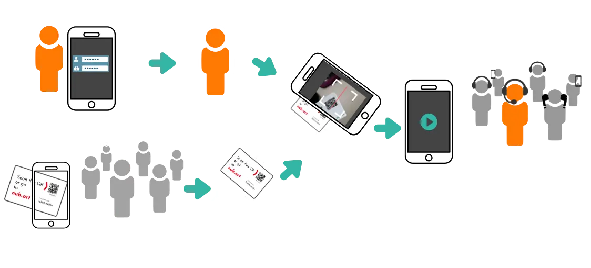

Zastąp tradycyjne narzędzia przewodnika turystycznego smartfonami
Prowadzisz wycieczki w hałaśliwych fabrykach, zatłoczonych muzeach lub ruchliwych ulicach miasta? Masz trudności z utrzymaniem uwagi wszystkich uczestników, gdy połowa grupy nie słyszy Pana/Pani?
Nubart® LIVE przesyła Państwa głos bezpośrednio do smartfonów uczestników poprzez proste zeskanowanie kodu QR. Mówią Państwo normalnie, a uczestnicy słyszą krystalicznie czysty dźwięk przez własne słuchawki — nawet w najgłośniejszych środowiskach.
Nie są wymagane żadne specjalne urządzenia. Nie trzeba pobierać aplikacji. Wystarczą karty z kodami QR wielokrotnego użytku i połączenie internetowe .
Istnieje lepszy sposób prowadzenia wycieczek grupowych niż ciężki sprzęt
Tradycyjne systemy tour guide
- Duże zestawy słuchawkowe trzeba czyścić po każdym użyciu
- Drogi sprzęt do zakupu, wynajmu lub serwisowania
- Goście z zagranicy czują się wykluczeni
- Mała elastyczność przy okazjonalnych wycieczkach
- Baterie, ładowanie i logistyka są konieczne
Nubart LIVE
- Bez aplikacji i bez sprzętu do dezynfekcji
- Goście po prostu skanują kod — bez problemów technicznych
- Opcjonalne tłumaczenie AI w ponad 35 językach
- Ciche pytania dla płynniejszego przebiegu wycieczki
- Jednorazowy zakup kart, bez floty urządzeń
Od 154 € za 50 kart wielokrotnego użytku (jednorazowy zakup, bez abonamentu) · Zobacz pełny cennik →
Zobacz, jak działa Nubart LIVE – podstawowa koncepcja

Chce Pan/Pani sprawdzić, jak Nubart LIVE sprawdzi się podczas Państwa wycieczek?
Zamów bezpłatny zestaw próbnyDziała na urządzeniach, które Państwa goście już posiadają
Zmień smartfony w bezprzewodowe odbiorniki przewodnika turystycznego
Łatwy w użyciu
Zarówno zwiedzający, jak i przewodnik skanują unikalny kod QR na kartach. To wszystko! Nie jest wymagana rejestracja ani pobieranie aplikacji. (Tylko przewodnik musi się zarejestrować).
Niedrogi
Nasz pakiet podstawowy, zawierający 500 kart, kosztuje mniej niż wynajem systemu przewodników turystycznych i wystarczy na wiele wycieczek.
Anonimowość
Państwa goście nie muszą podawać żadnych danych osobowych, aby korzystać z Nubart LIVE. Jest to całkowicie anonimowe!
Tłumaczenie AI
Prowadzą Państwo grupę wielojęzyczną? Nie ma problemu! Wystarczy dodać naszą funkcję tłumaczenia na żywo i wszyscy będą mogli śledzić wycieczkę, niezależnie od języka ojczystego .
Dowiedz się więcej
Zapytaj przewodnika
Państwa goście mogą zadawać przewodnikowi pytania w dowolnym momencie, nie przerywając mu: przewodnik ma dostęp do listy zgromadzonych pytań w dowolnym momencie.
Higieniczne
Tradycyjne słuchawki przewodnika muszą być dezynfekowane po każdym użyciu. Nasze karty nie!
Zrównoważone i bezodpadowe
Urządzenia generują odpady elektroniczne i wykorzystują baterie litowe. Nasze karty są drukowane na kartonie FSC z kompensacją CO2.
Sprawdź przykłady zastosowań Nubart LIVE
Przykłady zastosowań

Wycieczki po fabryce
Oprowadzaj odwiedzających po Państwa zakładzie w bardzo ekonomiczny sposób:
W połączeniu z jednokierunkowym mikrofonem smartfona, Nubart LIVE idealnie nadaje się do wycieczek w
hałaśliwym otoczeniu.

Wycieczki po mieście
Nubart LIVE to prosty i niedrogi system komunikacji bezprzewodowej przeznaczony do
wycieczek terenowych i wycieczek z przewodnikiem po mieście:
Zapomnij o hałasie ruchu ulicznego i nie martw się, jeśli
członek grupy oddali się zbytnio.

Dostępność
Nubart LIVE pomaga Państwu być bardziej otwartym:
Korzystanie ze słuchawek podłączonych do
smartfona podczas wycieczki zapewnia znacznie lepsze wrażenia osobom z wadami słuchu
(brak zakłóceń spowodowanych hałasem otoczenia, regulacja głośności).
Idealny do wycieczek po fabrykach i zakładach
Pokonaj wyzwania związane z wycieczkami po fabrykach
Hałaśliwe środowisko produkcyjne utrudnia komunikację. Tradycyjne systemy przewodników radiowych są drogie w zakupie lub wynajmie, wymagają ciągłej konserwacji i nie radzą sobie z grupami wielojęzycznymi.
Dlaczego fabryki wybierają Nubart LIVE:
- Zaawansowana redukcja szumów – krystalicznie czysty dźwięk nawet w hałaśliwych zakładach
- Opcjonalne mikrofony kierunkowe – poprawa jakości dźwięku w trudnych warunkach
- Szkolenia i wdrażanie pracowników – szkolenie międzynarodowych pracowników w ich języku ojczystym
- Prywatność gości VIP – anonimowy udział, idealny w przypadku poufnych wycieczek
- Brak ograniczeń częstotliwości – działa globalnie przez Internet, w przeciwieństwie do licencjonowanych systemów radiowych
- Okazjonalne użytkowanie – idealne rozwiązanie w przypadku kwartalnych wizyt inwestorów, a nie codziennych wycieczek
Typowe zastosowania w fabrykach:
- Wycieczki dla inwestorów i interesariuszy
- Szkolenia dla nowych pracowników i szkolenia z zakresu bezpieczeństwa
- Wizyty klientów w zakładzie
- Prezentacje na targach

Organizują Państwo wycieczki po fabryce?
Proszę zamówić bezpłatny zestaw próbny, aby przetestować go w Państwa zakładzie.
Poproś o bezpłatny zestaw próbnyPrzełam bariery językowe dzięki dodatku AI Translation
Opcjonalne tłumaczenie symultaniczne oparte na sztucznej inteligencji

Prowadzą Państwo wycieczki z zagranicznymi gośćmi? Jeden przewodnik może teraz obsługiwać grupę wielojęzyczną bez konieczności zatrudniania tłumaczy.
Nasze opcjonalne rozszerzenie tłumaczenia AI działa płynnie z Nubart LIVE:
- Uczestnicy skanują ten sam kod QR, ale wybierają preferowany język spośród ponad 35 opcji
- Mogą Państwo słuchać w oryginalnym języku, aby usłyszeć Państwa naturalny głos
- lub otrzymać tłumaczenie AI w czasie rzeczywistym w formie tekstu i dźwięku na ekranie
- Pytania są tłumaczone automatycznie, jeśli uczestnicy piszą w swoim własnym języku
Jedna wycieczka. Wiele języków. Nie są potrzebni dodatkowi przewodnicy.
Prezentacja Nubart LIVE z dodatkiem tłumaczenia AI
Proszę włączyć dźwięk podczas odtwarzania filmu!
Ceny & Kalkulator kosztów
Proste i przejrzyste ceny. Oblicz swój kosztorys w kilka sekund.
Karty z kodem QR
Jednorazowy zakup · nieograniczeni przewodnicy · bez abonamentu

PDF · wytnij i użyj
Dostawa maks. w 1 dzień
+ €1,50/kod · min. 50

500 wstępnie wydrukowanych kart kartonowych
Wysyłka w 2-3 dni

3 000+ kart · Twoja marka
Wysyłka w 30 dni
rabaty ilościowe
Dodatek tłumaczenia AI
- Ponad 35 języków, dźwięk i tekst w czasie rzeczywistym
- Cena za stream przewodnika, nie za język
- Nieograniczeni słuchacze — brak opłaty za odwiedzającego
- Naliczane tylko gdy przewodnik mówi z aktywnym tłumaczeniem
- Przewodnik włącza/wyłącza w dowolnym momencie
Biblioteka multimediów
Przewodnik wysyła treści multimedialne na ekrany uczestników za pomocą pilota. Jedna biblioteka na trasę.
Twoje szacunkowe koszty
Oblicz swój kosztorys Nubart LIVE w kilku kliknięciach
Krok 1 z 4
Jakiego pakietu kart potrzebujesz?
Krok 2 z 4
Czy potrzebujesz biblioteki multimediów?
Biblioteka multimediów umożliwia przewodnikowi wysyłanie zdjęć, filmów lub dokumentów na ekrany uczestników podczas wycieczki za pomocą pilota. Możesz utworzyć oddzielną bibliotekę dla każdej trasy.
Krok 3 z 4
Czy będziesz potrzebować dodatku tłumaczenia AI?
Tłumaczenie w czasie rzeczywistym w ponad 35 językach. €39 za godzinę streamu (na przewodnika z aktywnym tłumaczeniem).
Czy korzystasz z tłumaczenia AI Nubart LIVE po raz pierwszy?
Twoja wycena
Podsumowanie kosztów
Twoje zapytanie ofertowe jest gotowe
Skopiuj poniższy tekst i wklej go do klienta poczty lub użyj przycisku Otwórz w aplikacji pocztowej, jeśli masz ją skonfigurowaną.
Mają Państwo pytania dotyczące przewodnika? Nie ma problemu
Większość standardowych systemów przewodnickich (urządzeń) nie pozwala
gościom zadawać pytań.
Inne mają przycisk push-to-talk, który pozwala gościom
przesłać pytanie do całej grupy. Jednak nieśmiali uczestnicy mogą niechętnie
przerywać przewodnikowi. A ci bardziej śmiało mogą przejąć kontrolę nad wycieczką i zadawać niekończące się
pytania, pogarszając wrażenia wszystkich.
Nubart LIVE oferuje nieinwazyjne rozwiązanie, w którym pytania są zbierane na smartfonie przewodnika
, a przewodnik może na nie odpowiedzieć w odpowiednim momencie.
Jeśli zakupili Państwo moduł tłumaczenia symultanicznego, pytania będą
tłumaczone automatycznie.
Uczestnik

Przewodnik

Zaufało nam


Często zadawane pytania
FAQ
Pierwsze kroki
Podczas wycieczki
Podczas otwierania grupy jako przewodnik zalecamy zeskanowanie kilku dodatkowych kart na wypadek, gdyby ktoś spóźnił się.
W takiej sytuacji wystarczy wręczyć jedną z już zeskanowanych kart osobie, która się spóźniła. To wszystko — osoba ta będzie mogła natychmiast dołączyć do grupy.
Po zamknięciu grupy można ponownie wykorzystać te dodatkowe karty podczas następnej wycieczki. Karty stają się nieprzenoszalne dopiero po zeskanowaniu ich przez uczestników, a nie po zeskanowaniu ich przez przewodnika .
Na opóźnienie ma wpływ wydajność smartfona, jakość połączenia oraz to, czy uczestnicy korzystają z usług tego samego dostawcy danych komórkowych.
Jeśli jednak przewodnik mówi cicho, opóźnienie jest ledwo zauważalne — uczestnicy słyszą głównie wzmocniony głos ze swojego smartfona, a nie echo naturalnego głosu przewodnika.
Grupa pozostanie połączona, ale zostanie zawieszona na czas rozmowy. Po zakończeniu rozmowy należy powrócić do przeglądarki. Jeśli niektórzy uczestnicy mają czerwone światło zamiast zielonego, należy kliknąć „odśwież” — wszyscy ponownie połączą się bez konieczności ponownego skanowania kodów QR .
Uwaga: w systemie Android, jeśli zapomną Państwo wyciszyć mikrofon przed odebraniem połączenia, uczestnicy mogą usłyszeć Państwa stronę rozmowy. W przypadku iPhone'a nie usłyszą oni nic.
Więcej informacji na temat korzystania z Nubart LIVE podczas wycieczki.
Dodatek tłumaczenia AI
Zapoznaj się z naszymi instrukcjami, aby dowiedzieć się więcej.
W praktyce takie improwizowane rozwiązania zawodzą w przewidywalny sposób. Tłumaczenie działa naprzemiennie: przewodnik mówi, czeka, a aplikacja odtwarza tłumaczenie — każde wyjaśnienie trwa dwa razy dłużej. Naraz można odtworzyć tylko jeden język docelowy, więc mieszane grupy międzynarodowe stają się niemożliwe do obsłużenia. Jeśli dźwięk leci z głośnika, konkuruje z hałasem otoczenia i słyszą go osoby postronne — realny problem w poufnych strefach produkcyjnych. A gdy każdy zwiedzający obsługuje własną aplikację, każdy słyszy inne tłumaczenie w innym momencie, bez żadnej synchronizacji w grupie.
Nubart LIVE został zaprojektowany dokładnie z myślą o tym scenariuszu. Przewodnik mówi raz do swojego smartfona; wszyscy uczestnicy odbierają ten sam strumień audio na żywo, zsynchronizowany, na własnych telefonach i przez własne słuchawki — bez pobierania aplikacji i bez wspólnego głośnika. Z opcjonalnym tłumaczeniem symultanicznym AI każdy uczestnik wybiera swój język i słyszy ciągłe tłumaczenie, podczas gdy przewodnik mówi dalej bez przerw. Uczestnicy mogą nawet wysyłać przewodnikowi pytania na piśmie, automatycznie tłumaczone na jego język.
Konsumenckie aplikacje do tłumaczeń świetnie sprawdzają się, gdy trzeba zapytać o drogę na wakacjach. Oprowadzanie trzydziestu osób w pięciu językach po hałaśliwej hali fabrycznej to zupełnie inne zadanie — i wymaga systemu, który został do tego zaprojektowany.
Szczegóły techniczne
Nie ma to jednak wpływu na członków grupy: dla nich zużycie baterii nie jest znacznie większe niż podczas słuchania podcastu lub audiobooka. Na przykład godzina ciągłego użytkowania zużywa 8% baterii w 4-letnim telefonie z systemem Android.
Nubart LIVE działa z dowolnym standardowym urządzeniem hotspot i dowolną kartą SIM — możesz swobodnie wybrać sprzęt i plan danych najlepiej dopasowany do budżetu i miejsca docelowego. Takie rozwiązanie jest szczególnie przydatne, gdy w grupie są zagraniczni goście narażeni na opłaty roamingowe, gdy wycieczki odbywają się w miejscach ze słabym zasięgiem sieci komórkowej, lub gdy po prostu chcesz zagwarantować stabilne połączenie niezależnie od operatora i planu taryfowego każdego uczestnika.
Jeśli organizujesz wielodniowe wycieczki lub duże grupy z aktywnym tłumaczeniem, zalecamy odpowiednie dobranie planu danych — lub po prostu wybór opcji bez limitu, która zazwyczaj kosztuje tylko kilka euro więcej i eliminuje ryzyko wyczerpania danych w trakcie trasy.
Karty
Proszę przesłać nam zdjęcia, logo i inne elementy, które mają znaleźć się na karcie, a nasz projektant przygotuje kilka propozycji do wyboru.
Sprawdź nasze ceny za Nubart LIVE
Jeśli wolą Państwo, aby Państwa karty były projektowane indywidualnie, minimalne zamówienie wynosi 3000 sztuk.
Sprawdź nasze ceny za Nubart LIVE
Ceny
Gotowy, aby zmienić swoje wycieczki grupowe?
Wypróbuj Nubart LIVE bez ryzyka. Otrzymaj zestaw testowy z 30 minutami darmowego tłumaczenia AI.
Zamów bezpłatny zestaw testowyBez karty kredytowej Pełne wsparcie podczas testów